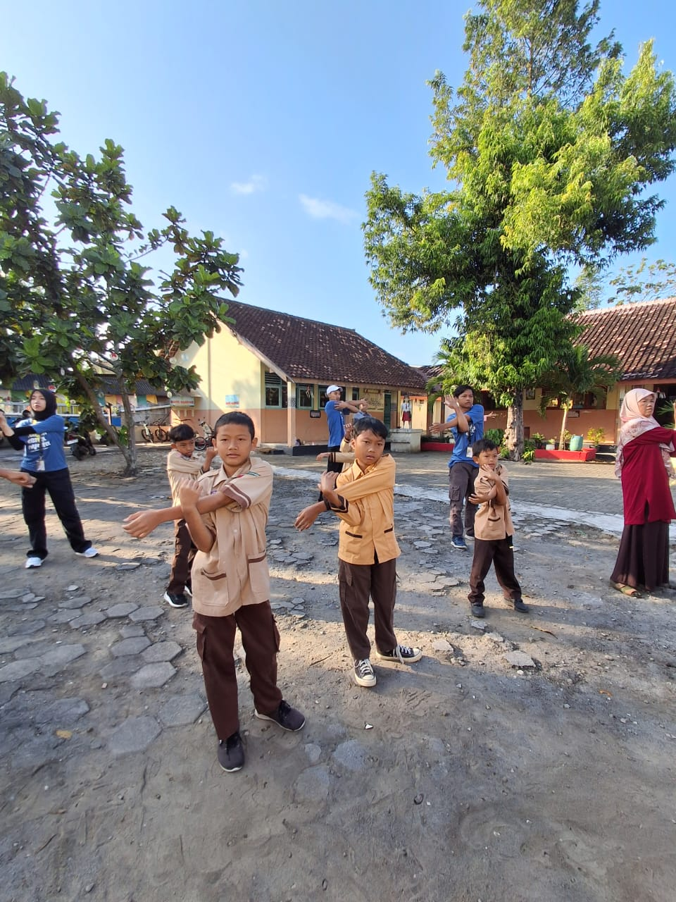

Senam Postur Ceria di SD Negeri Siyono III: Menanamkan Kesadaran Postur Sejak Dini
Gunungkidul – Tim Kuliah Kerja Nyata (KKN) kembali menghadirkan inovasi kegiatan yang bermanfaat bagi siswa/i sekolah dasar. Kali ini, SD Negeri Siyono III menjadi tuan rumah pelaksanaan senam Postur Ceria yang bertujuan menanamkan kesadaran akan pentingnya menjaga postur tubuh sejak usia dini, terutama untuk mencegah terjadinya scoliosis (kelengkungan tulang belakang ke samping) dan kifosis (bungkuk berlebihan).
Kegiatan yang berlangsung di halaman sekolah ini diikuti
oleh 34 siswa/i dari berbagai kelas. Sejak pagi, anak-anak
terlihat bersemangat mengikuti arahan dari tim KKN. Kegiatan
diawali dengan penyampaian edukasi singkat mengenai
kebiasaan sehari-hari yang dapat memengaruhi postur tubuh.
Tim KKN menjelaskan dengan bahasa sederhana, misalnya
tentang posisi duduk saat menulis, cara membawa tas sekolah
yang benar, hingga pentingnya melakukan peregangan agar
tubuh tetap sehat.Setelah itu, acara berlanjut dengan senam
Postur Ceria yang dipandu langsung oleh anggota tim.
Gerakan-gerakan senam disusun sederhana, penuh variasi, dan
mudah diikuti oleh anak-anak. Ada gerakan peregangan tangan
dan kaki, membuka dada untuk mencegah bungkuk, hingga
latihan keseimbangan. Tidak hanya bermanfaat secara fisik,
senam ini juga dirancang menyenangkan sehingga anak-anak
mengikuti dengan antusias, bahkan beberapa di antaranya
tampak tertawa ceria sambil menirukan gerakan.
Meski demikian, kegiatan tidak lepas dari kendala. Antusiasme anak-anak membuat mereka cukup sulit diatur ketika diminta membentuk barisan sebelum senam dimulai. Namun, berkat kerjasama yang baik antara tim KKN dan para guru pendamping, barisan dapat segera ditata kembali. Guru memberikan instruksi yang tegas namun tetap ramah, sementara tim KKN membantu menata posisi siswa secara langsung.
Partisipasi pihak sekolah juga sangat terasa. SD Negeri Siyono III memfasilitasi sarana dan prasarana berupa mikrofon dan sound system, sehingga penyampaian instruksi maupun edukasi dapat terdengar dengan jelas oleh seluruh peserta. Dukungan ini membuat jalannya acara semakin lancar dan tertib.Kegiatan senam ini tidak hanya memberikan pengalaman baru bagi anak-anak, tetapi juga menanamkan pemahaman penting bahwa postur tubuh harus dijaga sejak dini. “Senam ini bukan sekadar olahraga, tetapi juga cara mendidik anak-anak agar terbiasa duduk tegak, tidak membungkuk, dan menjaga tulang belakangnya tetap sehat,” ujar salah satu guru pendamping.
Sebagai tindak lanjut, guru diharapkan dapat membiasakan siswa melakukan peregangan sederhana secara rutin, misalnya sebelum pelajaran dimulai atau setelah jam istirahat. Dengan begitu, manfaat dari senam Postur Ceria dapat terus dirasakan, tidak hanya sekali kegiatan.
Kegiatan ini menunjukkan bahwa edukasi kesehatan bisa dikemas dengan cara yang menyenangkan. Melalui senam Postur Ceria, siswa/i SD Negeri Siyono III belajar sambil bergerak, tertawa, dan berinteraksi. Harapannya, kesadaran menjaga postur tubuh dapat terus terbawa hingga mereka tumbuh dewasa, sehingga risiko kelainan tulang belakang dapat diminimalisasi sejak usia dini.